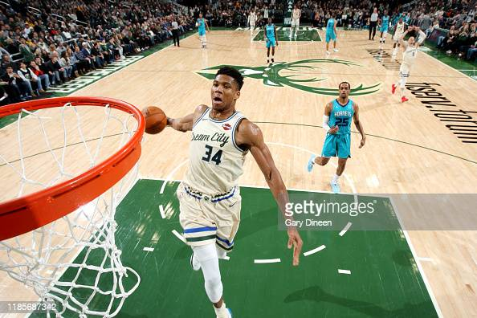

Giannis Anetokounmpo, born Decemeber 6th, 1994, is a Greek professional basketball player in the NBA for the Milwaukee Bucks. Due to his nationality and size, speed, strength, and ball handling skills he has been nicknamed "The Greek Freek". Antetokounmpo has quickly become one of the most decorated players in the NBA, already holding 2 NBA Most Valuable Player awards, 1 Championship, 1 Finals MVP, and a Defensive player of the year award. He joined all-time greats Michael Jordan (1988) and Hakeem Olajuwon (1994) as the only players to be named both MVP and DPOY in the same year. He was also slected to the NBA 75th Anniversary Team.
Bio by Trey Lawrence

One of Giannis' best career perfmorances came durring the 2021 NBA Finals against the Phoenix Suns. After dropping the first two games in Phoenix, the Bucks were in an 0-2 hole and needed to win Game 3 to have a chance at coming back. Milwaukee ended up winning game 3 120-100 thanks to 41 points, 13 rebounds and 6 assists from Giannis. The Bucks went on to win the next 3 games following and beat the Suns in the NBA Finals in 6 games. Giannis averaged 35.2 points, 13.2 rebounds, and 5 assits per game in the series, leading him to be named NBA Finals MVP. You can view highlights from the Finals below.